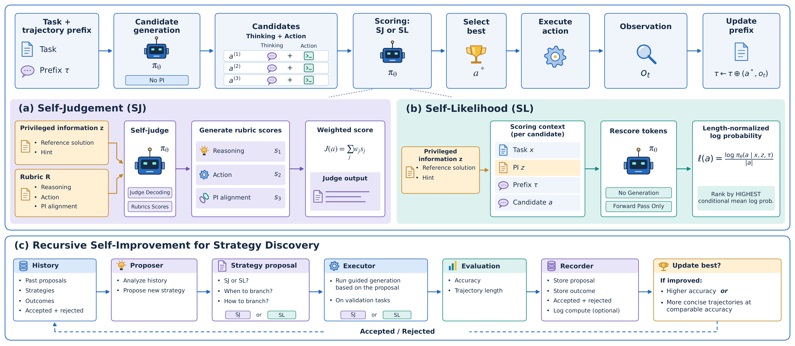

(Self-Improving)² Coding Agents:
Curating High-Quality Trajectories via Recursive Self-Improvement
1. Introduction
Training capable coding agents needs repository-level tasks with executable environments and solution trajectories. Task construction has been scaled up considerably, but effective trajectories remain scarce: even rollouts that end in a correct patch often contain intermediate failures, ineffective actions and repeated trial and error. In this work, we study how to curate accurate and concise trajectories with a single backend model.
We propose (Self-Improving)² Coding Agents, which applies self-improvement for trajectory generation at two levels. At the turn level, the model samples several candidate actions, evaluates them itself and executes only the best one, using Self-Judgement (SJ) or Self-Likelihood (SL). At the meta level, a recursive self-improvement (RSI) framework refines the self-improvement strategy itself, deciding when and how to branch so that the same benefit is obtained at lower compute.
On SWE-bench Pro, SJ and SL raise the resolve rate of Qwen3.5-122B-A10B from 48.0% to 58.5% and 53.8%. On DeepSWE v1.1, SJ raises GPT-5.6-Terra from 64.4% to 67.5% while cutting the mean number of turns from 59.3 to 52.3. An early-commitment window strategy found by the RSI framework matches the resolve rate of every-turn SJ with 31.5% of its additional compute. The trajectories curated by our self-improvement strategies also make better training data: a Qwen3.5-35B-A3B-Base student fine-tuned on them resolves 4.2% more of the Python tasks of SWE-bench Pro than one trained on standard rollouts, with more concise trajectories.

2. Self-Judgement
A task \(x\) consists of a problem statement, a repository and its execution environment. The agent solves it over turns: at turn \(t\) the policy \(\pi_\theta\) emits an action \(a_t\), a reasoning trace followed by a command, the environment returns an observation \(o_t\), and the pair is appended to the trajectory prefix \(\tau_{<t}\). Under self-judgement the policy first samples \(k\) candidates from the same unprivileged context as standard generation, \[ a_t^{(1)}, \dots, a_t^{(k)} \;\overset{\text{i.i.d.}}{\sim}\; \pi_\theta(\,\cdot \mid x, \tau_{<t}). \] The same model then acts as the judge. Prompted with the problem statement, the prefix, the candidate, the privileged information \(z\) and a rubric \(R = \{r_1, \dots, r_m\}\), it returns one score per rubric item, \[ s^{(i)} = \bigl(s_1^{(i)}, \dots, s_m^{(i)}\bigr) \sim \pi_\theta\bigl(\,\cdot \mid P_{\text{judge}}(x, \tau_{<t}, a_t^{(i)}, z, R)\bigr), \qquad s_j^{(i)} \in [0, 1], \] where the items cover the quality of the reasoning, the soundness of the proposed action and the alignment of the candidate with \(z\). The rubric score of a candidate is the weighted sum of its items, with weights \(w_j \ge 0\) and \(\sum_j w_j = 1\), and the candidate with the highest score is executed: \[ J\bigl(a_t^{(i)}\bigr) = \sum_{j=1}^{m} w_j\, s_j^{(i)}, \qquad i^\star = \arg\max_{i \in [k]} J\bigl(a_t^{(i)}\bigr). \] The observation returned for \(a_t^{(i^\star)}\) is appended to the prefix and the next turn starts from there. The privileged information, the reference solution in our experiments, is visible only to the judge. It never enters the generation context, so a curated trajectory has the same form as a standard turn-by-turn rollout and can be used directly for distillation or reinforcement learning. In our experiments SJ draws \(k = 2\) candidates per turn, averages \(n = 3\) judgements per candidate to reduce the variance of the scores, and gives the alignment with the privileged information a rubric weight of 0.30, with the remaining 0.70 distributed over the reasoning and action items.
3. Self-Likelihood
Self-likelihood replaces the generative judge with a likelihood test that generates no tokens. The intuition is that once the model is given the privileged information, it should assign the highest confidence to the candidate that is heading in the right direction. We therefore score each candidate by the length-normalised log-likelihood the same model assigns to it once \(z\) is inserted into the context, and execute the candidate with the highest value: \[ \ell\bigl(a_t^{(i)}\bigr) = \frac{1}{\lvert a_t^{(i)} \rvert} \sum_{u=1}^{\lvert a_t^{(i)} \rvert} \log \pi_\theta\bigl(a_{t,u}^{(i)} \mid x, z, \tau_{<t}, a_{t,<u}^{(i)}\bigr), \qquad i^\star = \arg\max_{i \in [k]} \ell\bigl(a_t^{(i)}\bigr), \] where \(a_{t,u}^{(i)}\) is the \(u\)-th token of the candidate. Equivalently, the candidate with the lowest per-token negative log-likelihood under the privileged context wins.
Computing \(\ell\) takes a single forward pass and the \(k\) passes share the prefix, so selection adds little on top of generating the candidates. SL uses a hint derived from the gold patch and the problem statement as privileged information, inserted right after the problem statement, and draws \(k = 4\) candidates per turn. As with SJ, \(z\) is used only for scoring: the candidates themselves are generated without it, and the trajectory that is kept contains no hints.
4. Recursive Self-Improvement Framework for Strategy Optimization
Branching at every turn is wasteful: many turns are effectively deterministic, and about 18% of branched candidates are functionally equivalent. We therefore treat the self-improvement strategy itself as the object to optimise. A strategy has two parts: a branching rule that decides at each turn whether to branch and how many candidates to draw, and a self-improvement strategy, SJ or SL. The branching rule may only use behavioural signals available at the turn, such as exit codes, whether an edit has been made or repeated commands, and never the identity of the task, which keeps the searched strategy from memorising the validation tasks.
The RSI framework runs in cycles over three agents. A Proposer reads the history of earlier cycles and a sample of anonymised trajectories and writes one candidate strategy; an Executor, the policy model itself, generates trajectories with that strategy on a validation split; a Recorder summarises the outcome and appends it to the history, whether the proposal was accepted or not. A proposal replaces the incumbent only if it solves at least δ = 7 more validation tasks, or keeps the solved count within ε = 2 tasks while shortening the trajectories by at least 10% in tokens or turns. The Proposer and Recorder are frontier models, Claude Opus 5 and GPT-5.6-Sol; the validation split holds 192 tasks from SWE-bench Multilingual, which the Proposer never sees.
Over 15 cycles the strategy accepted at cycle 6 remained the best: an early-commitment window that branches with k = 2 from the first observation until the third file-mutating command, then follows a single path. Its premise is that the early decisions determine a trajectory, while after the third edit the model proceeds well on its own.
5. Experiments
All experiments use the mini-SWE-agent harness with Bash as the only tool. We report the resolve rate and the mean, median and 90th percentile of the number of turns per trajectory; parentheses give the change against the standard strategy of the same model.
Table 1. Qwen3.5-122B-A10B on SWE-bench Verified (500 tasks) and SWE-bench Pro (731 tasks).
| Strategy | Verified | Pro | Turns, Verified | Turns, Pro |
|---|---|---|---|---|
| Standard | 67.0 | 48.0 | 72.1 / 64 / 122 | 84.6 / 80 / 135 |
| Self-judgement | 71.0 ↑4.0 | 58.5 ↑10.5 | 68.8 ↓3.3 / 61 ↓3 / 116 ↓6 | 80.2 ↓4.4 / 74 ↓6 / 130 ↓5 |
| Self-likelihood | 69.8 ↑2.8 | 53.8 ↑5.8 | 69.5 ↓2.6 / 62 ↓2 / 118 ↓4 | 69.9 ↓14.7 / 64 ↓16 / 117 ↓18 |
Self-judgement improves the resolve rate on both benchmarks, with the largest gain on the harder Pro benchmark, and condenses the trajectories at the same time. Self-likelihood, which needs no judge completions, also improves the Pro resolve rate by 5.8 points and produces the most concise trajectories on Pro, with the mean number of turns falling from 84.6 to 69.9.
Table 2. GPT-5.6 models on DeepSWE v1.1 (113 tasks). The Terra rows are averaged over four independent runs of the full benchmark; the Luna rows come from a single run. The API does not expose token-level probabilities, so self-likelihood cannot be evaluated on these models.
| Model | Strategy | Resolve rate | Turns |
|---|---|---|---|
| GPT-5.6-Luna-Max | Standard | 60.2 | 246.8 / 173 / 465 |
| Self-judgement | 64.6 ↑4.4 | 223.0 ↓23.8 / 150 ↓23 / 474 ↑9 | |
| GPT-5.6-Terra-xHigh | Standard | 64.4 ± 2.0 | 59.3 / 52 / 98 |
| Self-judgement | 67.5 ± 2.5 ↑3.1 | 52.3 ↓7.0 / 46 ↓6 / 86 ↓12 |
The effect carries over to frontier models. Self-judgement raises the resolve rate of Terra from 64.4% to 67.5% while reducing the mean number of turns from 59.3 to 52.3, and raises Luna from 60.2% to 64.6% with the mean number of turns falling from 246.8 to 223.0.
Table 3. Standard generation, every-turn self-judgement and the strategy discovered by the RSI framework on Qwen3.5-122B-A10B. None of these tasks were seen during the search. The branching cost counts the additional candidates and generated tokens beyond the executed trajectory.
| Benchmark | Strategy | Resolve rate | Turns | Extra candidates | Extra tokens |
|---|---|---|---|---|---|
| SWE-bench Verified | Standard | 67.0 | 72.1 / 64 / 122 | – | – |
| Full self-judgement | 71.0 ↑4.0 | 68.8 ↓3.3 / 61 ↓3 / 116 ↓6 | 34,393 | 7.8M | |
| Discovered strategy | 71.2 ↑4.2 | 71.9 ↓0.2 / 65 ↑1 / 120 ↓2 | 9,633 ↓72.0% | 2.1M ↓73.1% | |
| SWE-bench Pro (Python) | Standard | 55.3 | 78.9 / 74 / 126 | – | – |
| Full self-judgement | 65.4 ↑10.1 | 77.6 ↓1.3 / 71 ↓3 / 124 ↓2 | 20,642 | 4.7M | |
| Discovered strategy | 60.6 ↑5.3 | 73.3 ↓5.6 / 67 ↓7 / 124 ↓2 | 7,728 ↓62.6% | 1.8M ↓61.7% |
On Verified the discovered strategy matches full self-judgement (71.2% against 71.0%) while branching at only 28% of the turns and generating 9,633 additional candidates instead of 34,393. On the Python subset of Pro it keeps a clear gain over the standard baseline, from 55.3% to 60.6%, at roughly one third of the branching cost, and produces more concise trajectories than every-turn self-judgement.
Table 4. Data curation evaluated through supervised fine-tuning. Qwen3.5-35B-A3B-Base is fine-tuned on trajectories generated by Qwen3.5-122B-A10B on 10,780 Python tasks from SWE-smith and SWE-rebench under three curation settings, with the same recipe for every student. The three trajectory sets are released on Hugging Face as SI2CA-Training-Trajectories.
| Student | Verified | Pro (Python) | Turns, Verified | Turns, Pro (Python) |
|---|---|---|---|---|
| Qwen3.5-35B-A3B-Base | 24.0 | 12.4 | 33.7 / 28 / 64 | 41.6 / 32 / 79 |
| SFT on standard trajectories | 57.4 | 46.2 | 91.1 / 76 / 172 | 93.8 / 80 / 179 |
| SFT on full self-judgement | 59.6 ↑2.2 | 50.4 ↑4.2 | 83.4 ↓7.7 / 72 ↓4 / 140 ↓32 | 86.6 ↓7.2 / 75 ↓5 / 159 ↓20 |
| SFT on discovered strategy | 58.6 ↑1.2 | 50.4 ↑4.2 | 95.8 ↑4.7 / 82 ↑6 / 175 ↑3 | 92.8 ↓1.0 / 79 ↓1 / 170 ↓9 |
Trajectories curated by self-judgement make better training data than standard rollouts: the student trained on them resolves 2.2 points more on Verified and 4.2 points more on Pro (Python), and its trajectories are shorter on both benchmarks. The student trained on trajectories from the discovered strategy reaches the same gain on Pro at a lower curation cost.
Citation
@misc{liang2026si2ca,
author = {{SI2CA Contributors}},
title = {{(Self-Improving)$^2$ Coding Agents: Curating High-Quality Trajectories via Recursive Self-Improvement}},
year = {2026},
url = {https://github.com/Self-Improving-Coding-Agents/SI2CA}
}